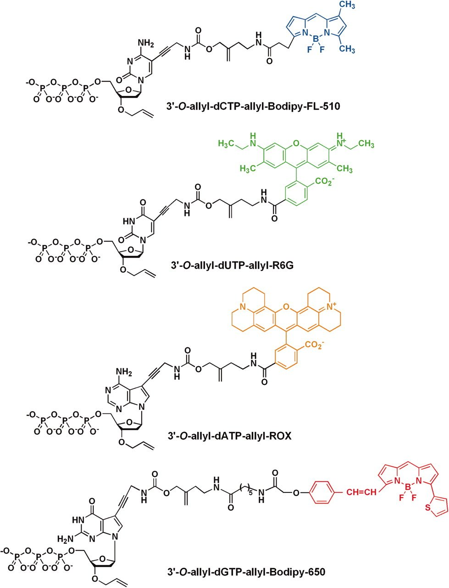

1 Introduction to NGS Sequencing
1.1 Lecture
PDF version of the slide lectures can be downloaded from here.
Text is a raw transcription of the lecture above - extensive editing is still underway. Readability will be low.
1.2 Introduction
We will make a start. So in this session, introduction to NGS data, I want to very briefly recap the basics of DNA for a good reason. Then introduce what DNA sequence is and how that works, and then also explain how Illumina NGS data, sequencing data is generated. The reason why I’m focusing on Illumina is because this is what the vast, very vast majority of ancient DNA will be sequenced on for reasons which I will explain later.
1.3 Basic structure of DNA
So first, to actually understand how sequencing works, we need to look at, just do a very, very briefly recap of what DNA is. So DNA, as you probably, everybody knows, is a double helix molecule which is stored in every single cell in your body (Figure 1.1).
And this double helix is actually made up of four main components called nucleotides, which you can see here (Figure 1.2), and they consist of two strands in which these four nucleotides will come together and bind together in a particular order. And these four nucleotides are made up of two groups, pyrimidines and purines. So pyrimidines are cytosines and thiamines, and purines are guanines and adenines.

{kind=link}

{kind=link}
And this base pairing, which brings the two strands of the DNA together, always consists of one pyrimidine and one pyrimine. I always remember which group go together, and so I remember it as C always goes with G, think CGI, and then go A with T. What’s some of the best CGI you’ve ever seen? It’s from Star Wars, so think AT-AT Walker (Figure 1.3), Antid Walker, you have been able to remember that. So what this means, and because they go together, it always means they’re complementary. So whenever you find a C on one strand of the DNA molecule, you will see a G on the other and vice versa, and again, A with a T on the other. So depending on which strand you are reading, you can always get the order of the base on the other strand because of this complementary base pairing.

.jpg){kind=link}
1.4 DNA replication
And this is important because this is essentially how replication occurs, so when you basically make a copy of the DNA strand. And in very simple terms, what we do is, or what the body does, is unwinds the multiple various macro structures, including double helix. You then separate the strands into two, so you have, all of your nucleotides are basically exposed, so you don’t have them binding together. And then you get an enzyme called DNA polymerase, which basically attaches onto the strands that’s reading along it, and when it finds an exposed nucleotide, it will say, well, okay, I recognize, for example, this is a C that’s being exposed, and it waits to basically pick up a free nucleotide floating around in the cellular gunk, and then basically allows it to bind together in that position. Then it basically will move along to the next exposed nucleotide, see what it is, let’s say it’s an A, and then it will basically wait to find the T and fix it on the strand, and eventually another enzyme, I believe, comes along, I can’t remember the name, I didn’t name this, comes along and basically repairs the backbone, like, no, it doesn’t matter, prepares the backbone to basically then have your two, strands from your original strand. And just remember basically having this enzyme picking up free nucleotides and adding it to the new strand, because this is the important thing the sequencing is within a minute.
1.5 Extracting DNA
Modern DNA
As a reminder, how we get DNA, so when you do this, you basically get your sample, you then have to break down the cells, the cell walls, and membranes, and then you basically have to destroy a lot of stuff inside the cell, there’s not the DNAs, things like RNAs, proteins, and things like this, because this can basically inhibit your DNA replication downstream in your molecular steps. You then separate out the DNA from the rest of the broken stuff, which you can then pull out (Figure 1.4). And normally in modern DNA, this can actually look like a long, this sort of spaghetti-like thing.

{kind=link}
Ancient DNA
However, ancient DNA is a bit different. The process is the same, you basically have to break down the tissue, in this case it’s, let’s say, bone, so you have to demineralize it to release all of the biomolecules, and you have to degrade all the other stuff, but the DNA molecules are also degraded, so they’re already fragmented, so they’re very short, they’re very damaged, so they have modified nucleotides, and they also have contamination. So basically, your small fragments DNA is sitting in a super-modern DNA, so a lot of these things will be covered in more detail in other later sessions, but you have to remember that they’re damaged, they’re old, they’re very, very short.
1.6 DNA sequencing
And this brings us on to DNA sequencing, which is essentially the conversion of the chemical, that’s better, chemical nucleotides of a DNA molecule to the human-readable ACTG on your computer screen, and what we basically do all of our analyses on in genetics and genomics. And the way this works is pretty common across most methods, which is you replicate a strand, as I described a minute ago, but instead of adding just a standard nucleotide, you add a fluorophore-modified nucleotide, so a fluorophore is a little molecule which essentially, when you excite it somehow, will emit a color.
And in the case of DNA, you can have four different nucleotides, and each one will emit a different color Figure 1.5. And so quite often, the way you excite the fluorophore is firing a laser, which then emits the light, and you record the color. And so when you’re basically adding your nucleotide each time, you fire a laser, take a picture of the color being emitted, and then you know which base it is, and then you repeat on the next base, and next base, and next base.

Sanger sequencing
So historically, the first, let’s say, mass production sequencing method was called Sanger sequencing (Figure 1.6). So what this involved was taking a DNA molecule, making lots and lots of copies of it, but also fragmenting it in a random manner, so all of the, oh sorry, fragmenting it, no. I’m getting confused, one step ahead. Sorry, taking a DNA molecule, making lots of copies of it. Then you start extending the molecule, but instead of adding just no standard nucleotides, you mix in a few special modified nucleotides, which include essentially a blocker. And what this means is that once the polymerase gets to this particular blocking nucleotide, it will not extend it any further. However, as you added a mixture of standard nucleotides and also these blocker nucleotides, your DNA molecules will be extended to somewhat a random length each time, because you have many, many different copies.

{kind=link}

{kind=link}
In the end, you will essentially have the entirety of your original molecule covered, as you can sort of see in this sort of step-like manner here. And what would happen once you basically have your randomly extended molecules, but with these blockers, you would then send it through a capillary gel, which basically separates out the DNA molecules based on its length, and then you would fire a laser. And the important thing about these blocking nucleotides is also they were essentially fluorophores, so when you fire the laser, it’ll emit a light. And as you basically have your DNA molecules going through the capillary gel, so the shorter ones going faster through the gel because of resistance, and the longer ones going slower, you can basically record the order of the molecules going through the capillary gel. And then according to the light, you can basically see the different colors, and then with that, you can basically count which base is in your DNA molecule, as it goes through the capillary gel, and basically reconstruct the sequence by this method (Figure 1.7). However, this is, the approach was actually not so good for high-throughput DNA, so trying to reconstruct whole genomes, a lot of the original human genome was generated with this, but this tooyears, was extremely expensive, and it’s also very, very resource-hungry, you have to use a lot of preliminary, you have to use a lot of DNA, which again, when we deal with ancient DNA, which you get very small amounts, because it’s very degraded, it doesn’t really work.
Next generation sequencing
And then in about 2005, next-generation sequencing, which is a bit of a misnomer, to be honest, came along, where you can see sequence billions and billions of DNA molecules at once. It was very fast and cheap, and very much revolutionized genetics, and pushed us into a near of genomics. And the market leader was, and still is, is a company called Illumina. There are others called PacBio and IonTorrent, but really Illumina is the one that pretty much everybody uses nowadays for at least short read sequencing. And as I’m sure you’re all aware, this is sort of, these machines are more second generation now, we have new machines like Oxford Nanopore, which basically do very long reads, PacBio to a certain extent, and that’s sort of more a third generation that we’re entering right now.
Oh, poop. Oh, dear, so unfortunately, my pretty picture has been, a video has been deleted, but what I want you to imagine is a big black window with lots of colored points. And when I press play, on all of these points, they’re going to start changing colors, going from red to green to yellow to blue, and this happening thousands of times at once across this big black screen. And this is essentially the process of sequencing.
1.7 Illumina sequencing
So what this black window that you should have been seeing would have been is something called a flow cell. This is a glass slide, and on this glass slide, it’s embedded sort of bound to the base of this, is lots of short DNA sequences, synthetic DNA sequences called oligos. And what you do is essentially take your DNA, and you basically inject it into the flow cell, and your DNA will spread across the flow cell, and start binding to this lawn. So imagine, literally imagine like a grass lawn on the base of this glass slide, and basically all of your DNA molecules are attaching to these random synthetic nucleotides, oligos.
Adapters
But the question is, how is your DNA actually binding onto this lawn, and not basically getting washed away as your solution flows through the flow cell? What you do before injecting into the flow cell is convert your DNA samples into something called a library. A library is an adapters, and see these are basically the complement sequence of the oligos, of these synthetic oligos, which allow you to bind to the lawn flow cell. But in addition to the adapters, you add onto DNA sequence, things called priming sites, so this is where the enzymes actually bind on to start copying the DNA.
And also, when you’re sequencing multiple samples at once on the same sequencing run, you can add things called indices, or known as barcodes, which are basically sample specific. So it allows you to mix multiple samples at once into one sequencing run, sequencing all at the same time, later on separate them out. So this is ultimately a slightly simplified version of a Illuminate DNA construct. So the X, X, X, X, X in the middle, this is your target. So this is actually your DNA sequence from your sample.
And then at both ends, you essentially have a target primer. So this is where your polymerase will bind onto to start, then actually going, reading into your target, or your insert is another phrase that you can call it. Then prior to the target primer, you also have an index. So this is actually your sample specific barcode. This is actually added typically onto the adapter, and so this happens in the, no, sorry. And the library construction, sorry. And then also you have the adapter and index primer right at the beginning. So this is both what binds onto your flow cell, but also acts as a primer for actually reading the index because you also need a sequence index to know which DNA molecule, to which sample DNA molecule it’s coming from.
Clustering
So once you’ve done this, in Illuminate sequencing, you have the problem that the fluorophores will be adding to your DNA molecule. The eliterated is not enough for a camera to pick up. It’s much, much, much too small. You’re dealing with these very, very small biomolecules. And so what you have to do is once your DNA molecule is bound to your flow cell, sort of some randomly, you start to make lots and lots and lots of copies. So when you have lots of copies, that means that all the copies will make the same nucleotide, sorry, the same color at once, and make the emissions strong enough that a camera in the sequencer can actually take a picture and record a lot base it is.
And the procedure making these copies is called clustering. So what this consists of is you have your DNA molecule, which is bound to one of the synthetic oligos on the lawn. And you basically do some of the bridge amplification where you basically bend over the DNA molecule. Sorry, sorry, I forgot. Your DNA molecule is single stranded at the moment. So when you bind this over, bend this over so that the reverse complement will bind to the other oligo, a primer can bind on and start reading across the molecule to reconstruct your double stranded DNA. So you basically get the complement or reverse strand of your DNA molecule to double stranded DNA. Then you had a primer to basically cut at one end or each end of the DNA molecule on the two different sort of forward and reverse adapters to result in two single stranded again DNA molecules. So basically the reverse complement of the DNA molecule, but you have one, sorry, two strands. Then you do the same thing again, bend it over, reconstruct the full double stranded molecule again, separate it out and do this many, many, many, many, many different times. And basically you have loads and loads and loads of copies of the same molecule in the same tiny little cluster, which is why you could go clustering in the same point in the flow cell.
Then prior to sequencing, you actually will cut all of one of these types off. So let’s say you’d only be left with the purple ones to make sure you only have the same sequence. So not the reverse complements, but just the same sequence in one spot on your flow cell. Sorry, one second. Basically this onto the actual sequencing process.
Sequencing-by-synthesis
Like I mentioned before with the Sanger sequencing and replication, what you do is you basically have your single stranded molecule, you’d had a prime, the primer, the priming site, sorry, priming site at the enzyme for the polymerase. And then you start to add free floating modified nucleotides, which have these fluorophores which will basically emit your light. So there is a slight difference in Sanger sequencing, however. So once you start adding, your polymerase goes along, it starts adding a free nucleotide and then you have the fluorophore. Now this fluorophore does block the next nucleotide being added on. So this makes sure that on all of the molecules in your cluster, and you’re only adding the correct nucleotide at one point. You then defy the laser, so the light is emitted, you take a photo.
However, the difference here between Sanger sequencing and why actually Illumina sequencing or the sequencing by synthesis is much more resource-sufficient is you can actually cut off this fluorophore and then basically repeat the process again. So rather than basically having your DNA molecule having one use of single use, you can sort of recycle the same DNA molecule to basically then add the next nucleotide. So this case will be, let’s say this blue one, and I’ll attach that on. Fire a laser, take a photo, remove the fluorophore, and then back again. And basically you can reconstruct the entire sequence of the molecule without having to basically throw away the DNA molecule once you’ve taken the picture of just that single nucleotide. And this normally happens at the Illumina sequencing somewhere betweein either categories of 50, polyester and helicopter. Normally happens at 50, 75times. And these are also known as cycles.
Okay, this is sort of what you should have been seeing like earlier in this animation. You should see a big black square with all these colored dots. So the black, black square is your flow cell and all these colored dots are these different clusters, each representing a single DNA molecule which we copy lots and lots and lots of times. And so what you can imagine sort of like in like a video or a film where basically you’ve got hundreds and hundreds of thousands of single shots just sped up over time, you add the first, so you have your flow cell, your DNA cluster is bound to the flow cell. You add the nucleotides, you fire the laser. And when you fire the laser, you should see basically a color being emitted. So in this case, green here and here, this is another DNA molecule, which is yellow, blue. And you take the picture and then you know that a green is only attached to teas. And so basically you see a tea molecule being picked up. So you record a tea, you remove the fluorophore, you add, wash those away, add the new fluorophores, the next base pair, the nucleotide will be bound onto the molecule, you fire the laser, it will be this time a blue. And this means you have a G. Then you again, cut the fluorophore off, add the new ones, fire the laser, emits a red. And so this is how you basically reconstruct all of these molecules. And again, the flow cell has millions and millions of these points, of these colored dots. And this is why you can see so many different DNA molecules all at once. Now, again, you have in your head these four colors before because you’ve seen the animation, also this picture, but there is differences to this. So there’s actually two different, with the luminous sequencing, there’s two different methods of actually emitting light. One is called the four channel system, or four color chemistry, where each nucleotide has a distinct color.
Colour chemistry
But there’s also on particularly the next seek and no seek machines, a slight different system, where they called, they tried to make it a bit cheaper by only using two colors or two dyes. And the approach they take there is that, again, a T is green, red is, C is a red. However, in this case, an A is actually two colors mixed at once. So if you emit that both, so if the machine picks up two colors, two wavelengths are being emitted, that is an A. However, if there was no color being emitted at all in that cluster, the machine reaches as a G, or a no detected dye. So this is very important for some caveats or things you have to consider when processing your data a bit later on.
Paired-end sequencing
So something you have to consider though is we’re dealing with biology. It is not like, I don’t know, chemistry or even sort of physics, where things are perfect and wonderful. Over time, areas start happening, we’re not perfect. And essentially the imaging reagents start getting tired, the polymerases start adding mistakes, or don’t bind on properly and more areas will occur. So sometimes your nucleotides will not bind, meaning you’ll skip a base or you’ll get multiple nucleotides being added once and you go forward one. And essentially within your cluster, the DNA molecules being sort of replicated and emitting light will get desynced. So the color will get a bit blurry and less clear.
And so first the machine does calculate some sort of base quality. So it captures the probability that it thinks it captured the right color, so the right nucleotide of each photo. But to the point where if it has no idea, it will call a dead base call, which will be reported as an N. And this became more and more of a problem, particularly in the early days of sequencing. And so people thought, how can we improve or correct such sort of errors? And the idea that came up was paired end sequencing.
So what this means is you do one sequencing in one direction, then you flip the entire read over and then read it from the other end. So whereas you have to consider that when you’re in the forward direction, over time you’re getting more and more errors. So the further you get into the molecule, the less confident you are. And so the more errors are gonna be. You can then turn it over and start the whole thing from scratch with fresh reagents. By going from the reverse end forward, you basically can correct the mistakes that were occurring at the end of the forward sequencing, but get the high quality calls from the other end from the beginning. So you can sort of, that’s a bad explanation. But you can sort of see here, you read it once in this direction. So you read the DNA insert and the prime, the index. You turn it over and you do the same thing, but from the beginning. So you basically sequence the same DNA molecule twice. An added bonus of this is also you get more cycles. So if your DNA molecule is a single molecule, it’s actually longer than the cycles. It’s 50% fair, five base pairs. By going from the other end, you can capture any DNA nucleotides which you’re missing from the forward sequencing. This is not so necessarily relevant to DNA. We will typically very short DNA molecules, but in some cases that will apply.
Demultiplexing
Then it comes on to biological to computational sequence. How do we take these sort of very raw nucleotide sequences and put it into a format that a computer can read? This typically happens in a step of demultiplexing. It’s actually very rare that you yourself as students will have to deal with this or do with this. Typically this is done by sequencing centers or by your lab team. But what this essentially consists of is normally or rather often nowadays, there is two steps in which you’re stuck together, which colloquially are no demultiplexing.
The first step is called base calling. This is where you basically take your photo files of every single nucleotide and convert this into an ACTNG. So taking image files, putting into a text file. But also in most cases, we have multiple sequence, multiple samples at once. And all the samples have these barcodes or indices. And we need to actually separate these out. So you know that all of these DNA molecules come from this sample or these DNA sample, sorry, DNA molecules from this sample. And this happens in this demultiplexing step. So essentially a computer program will read in each DNA molecule whether it finds such a barcode across from one sample, let’s say an example here, the red one that corresponds to sample one and the reverse here. And then the machine will basically sort or order the DNA molecules accordingly. So all of the DNA molecules which have these combinations and indices will put into sample one, sample two. So the blue and yellow will go here and so on. So this is something you, again, rarely will have to do yourself, but it’s something just to keep in mind.
FASTQ File
And the output of this demultiplexing step is something called a fastq file. So this is a text-based format for storing biological sequences itimes of cases nucleotide sequences, but also with the base quality scores. So these are the things where the computer tries to estimate the probability that it thinks that the nucleotide call was correct. And both are encoded basically with ASCII text characters. Doesn’t really matter what they are, if you’re not familiar with that. So this is a very, very small example. These files can be gigabytes in size, so huge, huge text files typically compressed, but still a gigabyte start to being compressed.
But what they, all they are made of, of basically a repeating set of four different lines. You have the first line up here, and this is called the ID line. This stores multiple information from the sequencer. So the sequencing, or the sequencing machine ID, then a run number, a flow cell ID, so each flow cell will have an ID from the manufacturer. And then you have essentially a bunch of coordinates going on here, which basically tells you from which cluster on their flow cell has the DNA molecule come from. Then you can have a bunch of extra information. This is often quite random depending on the sequencing and what they put in here, but often people put things like barcodes, maybe sort of how many errors were allowed during gene multiplexing, because you could do a certain enough filtering during that step. On the second line, you have the DNA sequence itself. So in this case, it starts with an N, this is dead-based call. This is actually quite often common, because this is when the camera is still calibrating itself. And so the first base is often a bit rubbish, but then the rest of the molecule, as you can see, sorry, the sequence here is A, C, T, and G, so it’s usually a new molecule. You’ll then have a plus, which is a separator. And the fourth line of this repeating set of four is then the base quality scores. So these are random, sort of a random set of characters, which I’ll explain in a second. But basically this tells you the confidence of that, how good we think that that nucleotide call was.
And then you can basically see the same thing here on the next line, and it repeats as follows. So you can see, for example, this number is a bit different, because it’s from a slightly different coordinate cluster. So these quality scores, they are not uniform, I have to say. So it depends on both the age of the machine and what the manufacturer selected. But typically they will look something like this, where there’s a fixed order in the ASCII characters. And each one will correspond to a different probability of Fred’s score. I won’t explain exactly what that is, it’s a bit mazzy. But essentially what it means is that the higher the character along this score, the more confident you are of the base call, because the probability that it’s incorrect is sort of low.
1.8 Sequencing recap
So to recap, DNA molecules are essentially made of nucleotides, A, C, T, and Gs. We have two strands, which is complementary based pairings, C, G, CGI, AT, Atatoka, Star Wars, it’s great. Modern DNA is very long, but AT DNA is very short. And this is very good for NGS sequencing, where we do this massive multiplexing. So where rather than trying to sequence few very long DNA molecules, we sequence lots and lots and lots of very short ones at very high accuracy, which we can then reconstruct the long sequences later on, if you’ve got a good DNA. So the main steps are adding adapters to create something called a library, which allows your DNA molecules to bind to the glass slide, the flow cell, or something called a lawn. You then basically make a new strand, each cycle, you basically add a fluorescent nucleotide, which you can fire a laser, AT, which emits a colour, you can take a photo, and by basically recording, the order of the colours being emitted in a single point in the flow cell, you can reconstruct the DNA sequence. This de-syncing of clusters results in lower based quality scores over time, so you can also improve this by paired end sequencing, where you basically sequence from one end, and then do turn it around, then you sequence from the other end with fresh reagents.
1.9 Sequencing and considerations for ancient metagenomics
So for the last section of this lecture, I want to give you a few ideas of things you should consider when you’re dealing with DNA for ancient genomics. Some of those are applicable to modern genomics too, but it’s things I find that, through my career, people forget about in some cases.
Low DNA preservation
So firstly is low DNA preservation. So when you’re dealing with an ancient DNA, your samples are very old, and only have very little DNA in the sample, and during library preparation, you may have to do lots and lots and lots of amplification, make lots and lots and lots of copies of your DNA to make a sufficient amount to actually put sequencing. And this is important, and it will be discussed later during the week, but this is important because during library construction, you can actually inflate your counts in terms of DNA molecules that come from a particular taxon, micro-brothaxon, for example, and basically skew your estimate of which species are in your sample or not, or were in your sample because they’re now dead. Also, by overamplifying your DNA molecules, you reduce the number of sequencers you actually get out there. By having these duplicate molecules, you’re not actually providing any more extra information about your DNA library, and your sequencing flow cell only has a fixed number of sequencing slots, which basically, if you’ve overamplified your library, will basically fill up your slots and you will not sequence as many unique reads, and so the amount of information you’re getting out of your DNA molecule can be problematic. So this is actually quite, I’ve jumped ahead quite a bit in terms of detail here, but this is, I wanted to have the slides here for you to go back to and recap later.
Index hopping
Another thing during sequencing, you have to consider is something called index hopping. So this is a problem, particularly with Illumina Sequ, or people are aware of with Illumina sequencing, and it’s a challenge when you’re doing multiplex sequencing. When you’re sequencing lots and lots of samples at once, and you have to have these indexes or barcodes, which allow you to identify this DNA molecule comes from this sample. This seems to happen more often on a type of flow cell, which you find on Illumina HiSeq X and NovaSeq machines, and is ultimately caused by free floating index primers. And why that is a problem, is that if you do not sufficiently clean up your primers, during the clustering process, you can accidentally start adding on or switching barcodes between DNA molecules. This does happen at a relatively low rate, but it does happen. And so what it means is that essentially you switch the barcodes and you may accidentally assign a DNA molecule from one sample into another sample when you’re doing demultiplexing. And so let’s say you’re dealing with a microbiome sample, and you have lots of, let’s say, unless you have an oral microbiome sample and a gut microbiome sample, you may start seeing, for example, oral species popping up in your, or sort of oral species which are only found in the mouth, ending up in your gut samples, which may be a bit weird. This can also be a particular problem if you’re doing microbial genomics, so doing, let’s say, pathogen reconstruction, if you’re working on that. And you mix capture results with your shotgun samples because then you may start picking up the high amount of capture results in your shotgun samples where you’re doing screening. So you may start getting false positives there. There’s quite a few papers on this, also in the context of ancient DNA, so van der Waag has got quite a good paper to understand that and also had to correct such, or estimate the level of this in your studies.
Sequencing errors
They go back to the sequencing, you have to consider your sequencing errors. So if you don’t sufficiently quality control and check for these errors happening on DNA sequencing, you may actually start incorporating errors into your analysis downstream. So for example, what may happen is if you have a low base quality score, the machine may have picked up the wrong base or the wrong nucleotide. And this means that your DNA molecule or sequence, when you compare to reference genome databases or reference genomes, may start going to the wrong place or match the wrong reference genome because you have the wrong nucleotides, the wrong sequence. Which can be a problem. Also, it can reduce your chance of getting sufficient overlap during the assembly, which is where you basically stick together all of the overlapping DNA molecules together to try and reconstruct the entire molecule. This is something that Alex will present on Thursday, like Subna. And also if you’re doing variant calling for phylogenomics and you have very low coverage, this may also start increasing, increasing the add errors and you will do the wrong SNP call, which means that basically your, the relationship between your genomes in your tree, for example, will be skewed. And so it’s always very important to check for such errors and check that your sequencing run was high quality.
Dirty Genomes
You also have to consider, so this is again sort of jumping ahead, but there’s a reason why I’m putting in this presentation, is dirty genomes. So unfortunately, there are many reference genomes which are very dirty. So dirty, I mean, for example, having a lot of adapters still in there. And this means you have the problem where if you yourself have not sufficiently cleaned up your DNA library to remove the adapters and remove also pre-processing, you will start seeing weird results. For example, I very, very highly expect that if any of you screen against the NTPI-NT nucleotide database, you will start seeing carp everywhere. And the reason why is because people somehow got onto the NCBI a whole carp genome without removing any of their adapters. So there’s adapters sequences everywhere in the genome. And so whenever you have an adapter in your library, this will basically align to the carp genome and then you’ll get carp, which particularly if you’re trying to look at diet, for example, or ancient diet in, like say microbiome studies, where you look at some calculus, you may start seeing carp even if you’re, I don’t know, from, got samples from, I don’t know, Chile or somewhere where carp is not expected to find. You also often will find this with zebrafish. So often many, many, many, I think it’s Darius Varini or something like that, which makes no sense because all of these fish comes from one lake in Africa, but you see it everywhere in your metronome examples. And again, it’s because of dirty genomes where they think of adapters or vectors in the genome.
Low Sequence Diversity
Another thing is low sequence diversity. So what I mean by this is mononucleotide reads, like GGGGG, or dinoucleotide repeats. This is not so much of an error necessarily when you’re doing metagenomics, but when you come into genomics, this can be a problem. So the problem with such DNA molecules, like this one here, GGGGG, is they’re very unspecific. They give you no information. That can come from any species everywhere because they are very common across all genomes. So the problem here is that firstly, it slows down your processing because basically you are aligning against, or comparing of DNA sequence against many, many, many different genomes to ultimately say, I don’t know which one it comes from, which is unnecessary. And also in some cases, it can inflate counts at higher nodes when you’re doing an LCA. This will be described later on. But this can be very common. So if you remember this two-color chemistry which I mentioned earlier, where you don’t have one color per base, but rather if there is no color emitted, the machine uses a G, particularly with an ek-seq and no-seq data, you will have a lot of these Gs, particularly as we’re dealing with ancient DNA, which is very short. When you have very short ancient DNA and you don’t reach all of your cycles, so let’s say you’re doinbase pair cycles, but your DNA molecules are onlbase pairs, you will basically get to the end of your DNA molecules and not add anything else. So you start getting these very long tails of Gs at the end of your molecules. And if you don’t remove these, this will make it very difficult to correctly align your DNA molecule to a reference genome or sequence. So be aware to look for these and remove these. Also because it will speed up your processing. So to recap the considerations, a lot of this will make more sense later on in the other sessions, but consider your duplication rates. You check for lots of copies of same DNA molecule in your library. It’s a good idea to check for index hopping, so making sure that the index combinations that you have in your library are correct and you’ve sorted your samples correctly. Always check for sequencing error and remove low quality bases if possible. Check for adapters, so to make sure you don’t start finding CARP everywhere. And also it’s a good idea to look for low-seq and diversity reads. For example, particularly if you put next-seq or no-seq data, because it just slows down your results and you get lower quality text-long assignment.
Q and A
How to design barcodes
Okay. How to design the barcodes. That’s a question from UD. That is quite tricky because there’s a lot of considerations you have to make when making sure there’s a balance and they’re not too similar to each other. Often manufacturers have tools which allow you to basically generate this. I believe they also to sentence and have standard sets which they can also send you that you request. So you yourself do not have to necessarily design these. It depends on your lab. So often I’d say speak to your sequencing center if you have them. Because they all have advice. All check manufacturers, I think most like Agilent and Illumina will also basically have such things for you then. Yeah, sometimes they make it a little bit defined but you can’t find them. And if you read the Meyer and Chercher article for buildinnew libraries, it would be provided in that set. Yeah. Could everyone hear Tina then? No? Okay. So she said that often the manufacturer make it a bit hard to find such functionality on their websites and stuff, but you can often do that. But also if you read the sort of classic paper by Meyer and Chercher 2011, 12, they actually have the set of barcodes that you can use yourself. So I think that link, that paper is on the website somewhere but we can also share with you.
How many indicies can you use
How many indices can you use? So this is a good question. This depends on your strategy and is slowly changing over time. So you can actually choose one index if you want, which is at the beginning of your, this is from Laura, which is the beginning of your molecule. What has been recommended and what the Meyer and Chercher paper introduces double indexing where you have two at the end. And these are attached to your adapters. What people are commonly doing now is actually adding additional barcodes called inline barcodes. So these are very short sequences, about seven base pairs I think, which you actually attach immediately to the DNA molecule before library preparation. So after extraction before library preparation. And this actually helps you with, sorry, with correcting for index hopping. So if you read the van der Waal paper, which I mentioned earlier, we can send the link again later. They also describe how they use these internal barcodes to separate out. So for example, you can get from a manufacturer about 100, let’s say barcodes, but you will normally per library can have somewhere between one to four separate identifiers.
Why Gs called more often in two colour chemistry sequencing
So I have a question regarding the gene calling for Gs, right? You mentioned that Gs are a characteristic of ancient DNA or sequencing errors. Why is it specifically Gs that are called more often rather than the other bases? The reason, okay, so that is because your DNA molecule is very short. So let’s say your DNA sequence is onlbase pairs long, but your sequencing cycles, so the number of cycles of imaging your machine is gonna do is let’s sabase pairs. Once you’ve got through thbase pairs, there is nothing to sequence anymore. Your lights are not going to emit anything. So when you’re on nobody-connected data, if no, sorry, machines, if no light is emitted, it reads it as a G. And you have to remember that the machine is not going to stop imaging once that one DNA molecule is finished. The DNA, the sequencing machine will keep taking photos until it’s reached to the number of cycles you’ve set, whether in this case, 75. So once you’ve exhausted your DNA molecule, there’s nothing to sequence, nothing to image anymore. So basically the machine will just keep picking up G for every remaining cycle of the run. Does that make sense? Yes. Yes, it does. But still I don’t get why G and not like AT. Why is it specifically the space? Because on nobody can make sick data, whatever reason they’ve decided Gs means nothing. There’s no color. Once it runs out of the…
Yeah, so basically the problem with ancient DNA is we often have very short reads. So you might do say two bsequencing, which is very common, but you might have a read that’s onlbases long. And so once it kind of runs out of DNA, it will just, it won’t sequence anymore. So there’ll be no more fluorophores. And because the NovaSeq and the next you can interpret that as a G, you’ll just get these polyG tails, but actually it just means no more data. And another thing to… Could you make it up for yourself? And I think this may also happen in modern data as well. If you’ve fragmented your modern data too short, you’ll also get that. It’s just that in the complex of ancient DNA, the reason why I said that is because we are naturally already very, very short because of the degradation. And I’ll also say this is, if you’re used to doing modern DNA, this is where it’s really different because let’s say you’re sequencing a regular library. What you would normally do for modern DNA is you have genomic DNA, which is huge. So for your microbial DNA, each genome is something likmillion bases long, and that’s way too big for an aluminum machine. So what you would do is you would shear it either enzymatically or by sonication, usually to an average size of aboubases. And then you do your alumina sequencing usually two by 150. So you kind of measure one side, then you measure the other side, and you get a total obases sequenced out of thbase pair read. You never run out of DNA. You never actually get to the end of the molecule when you’re sequencing. And so for most people that do modern DNA sequencing, they’ve never dealt with this problem before because they never see it because they’re always sequencing a DNA molecule longer than what their sequencing chemistry can actually do. For ancient DNA, it’s very different. We actually don’t shear. We take advantage of the fact that because our DNA is short, we don’t have to shear. And because we don’t shear, it actually allows us to exclude some of the modern contamination because any modern DNA that’s in there will be so long that it won’t build a proper library and it won’t be sequenced. And so it kind of helps us clear out some of the modern DNA that might be present. And so we will only sequence the short DNA sequences, which are more likely to actually be ancient. But the problem there is we’re dealing with the real size of the ancient DNA, which might bbases, 30 basesbasesbases. We don’t have necessarily the kind of consistency you would have if you were intentionally shearing modern DNA. So we do have some sequences that are very short.
What is full genome seuqencing
Okay, so Liasat asked, when we’re talking about whole genome sequencing, so WGS and full genome sequencing, FGS, is it the same? I’ve never heard of FGS. So yes, I would say it probably is.
Tools for generating indicies
And then Jaime asks, is, I hope I’m saying that right. Is this kind of program publicly available? Is this to? Sorry? It was the index checker to make sure your pool is not. It was the index checker, yes. So again, lots of tools online, I think, basically, to make sure there’s no overlap. Normally the manufacturer will offer such thing.
1.10 Readings
Reviews
Sequencing Library Construction
Errors and Considerations
1.11 Questions to think about
- Why is Illumina sequencing technologies useful for aDNA?
- What problems can the 2-colour chemistry technology of NextSeq and NovaSeqs cause in downstream analysis?
- Why is ‘Index-Hopping’ a problem?
- What is good software to evaluate the quality of your sequencing runs?